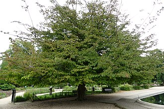
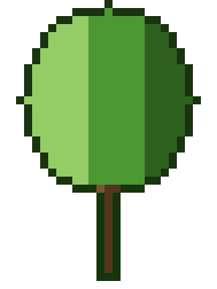

Parrotia — Persian ironwood (Parrotia)
The ancient ironsmith of Persia — so dense it sinks in water and shrugs off axes, yet bursts into flame-red autumn glory every year as if reminding the world it once ruled the Caspian forests.
Combat flavor
Its iron-hard timber means attacks land slow but crushing — every blow carries the weight of ancient Persian mountains. Its Legendary Support role could reflect a passive "ironclad aura" that hardens adjacent allies, echoing the tree's near-mythical reputation for indestructibility.
Real-world facts
Typical / max height6–12 m typical; up to 15 m in wild specimens
Lifespan100+ years; exceptionally long-lived for its size
WoodExtremely dense and close-grained hardwood; basic density ~670–750 kg/m³ (air-dry ~800–950 kg/m³); so heavy it was used for bridges, tool handles and telephone poles in Iran — hence the "ironwood" name. No Janka figure available, but hardness is comparable to the hardest temperate hardwoods.
Growth speedMedium (~30 cm/year)
Ecology / notable traitsNative to a tiny relic range in the Hyrcanian forests of northern Iran and the Caucasus (IUCN: rare globally); related to witch-hazel (Hamamelidaceae); striking multi-season ornamental — exfoliating mosaic bark, brilliant autumn colour; no thorns or significant toxicity; highly pest- and disease-resistant; cultural symbol of the Caspian/Persian heritage landscape
Gallery

